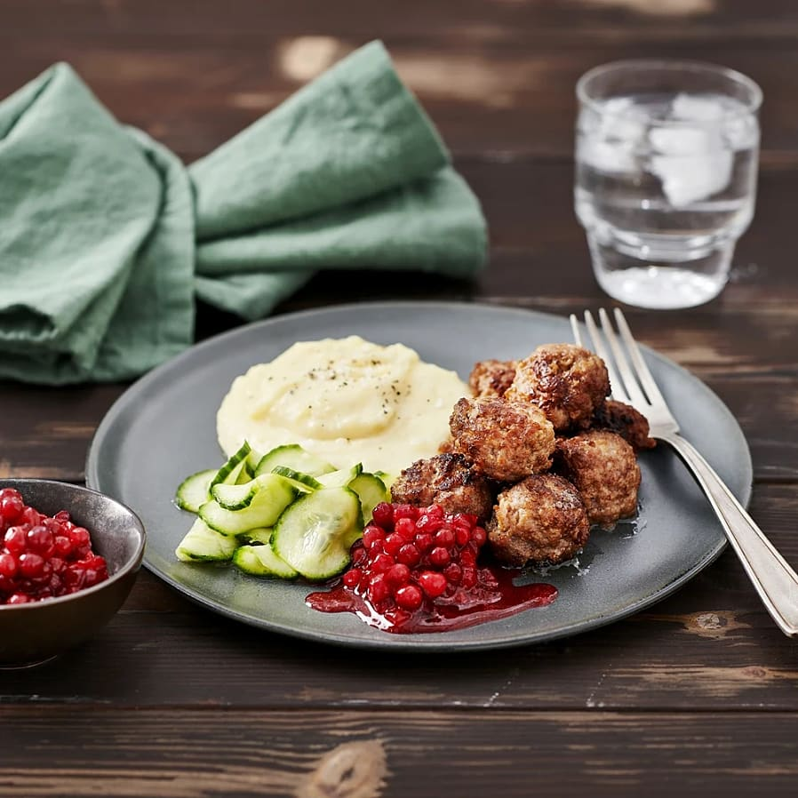

meatballs

Description
This will teach you how to make swedish meatballs, but just the balls and not the gravy.
Ingredients
- 1 1/2 dl Milk
- 5 msk bread crumbs
- 500 g mincemeat
- 1/2 yellow onion
- 1 egg
- 1 tsk salt
- 1 krm pepper
- 1/2 tsk sugar
Steps
- Mix milk and breadcrumbs. Let it sit 10 min.
- Add mincemeat, onion, egg, salt, pepper and sugar. Mix well.
- Moisten your hands with cold water and make the meatballs with your hands.
- Fry the meatballs in butter or dietary fat